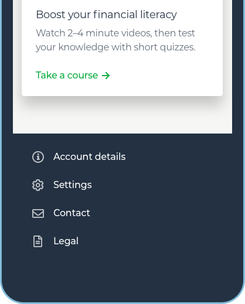
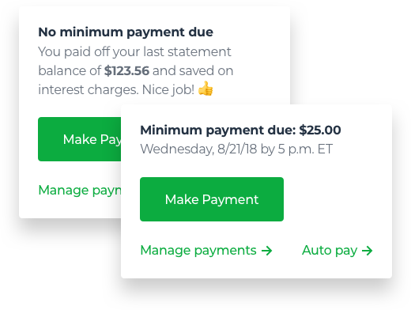
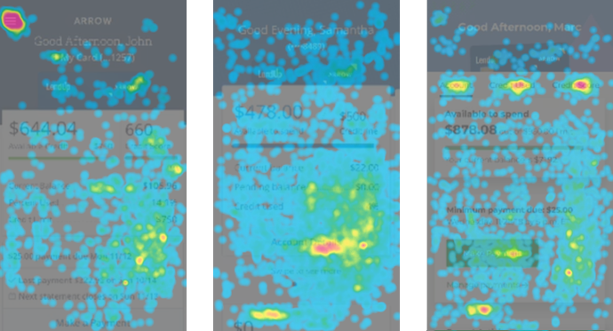
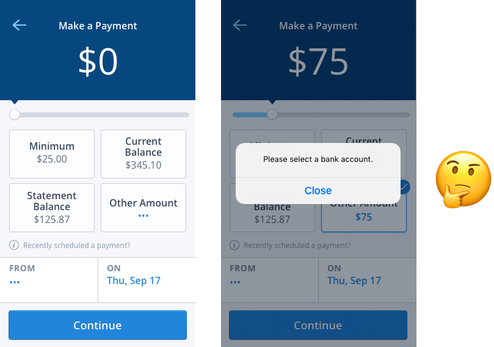

Currently looking for my next arbitrary stupid goal and giver of gifts.
From 2017–2018, I was a Product Designer on LendUp’s Arrow Card and led the design of the iOS and Android apps from launch to over 15,000 users. I also worked on cross-platform projects that reached 850,000+ customers.
Before that, I was at Hightail Spaces (acq. by OpenText), Clementine (acq. by Dropbox), and Girls Who Code.
My work
üì± Redesigning the Arrow Card dashboard
üë©‚Äçüë©‚Äçüëß‚Äçüë¶ Managing a design system
üí≥ Improving bill payment conversion
üë©‚Äçüíª More “work”
Pssst, need a üìÑ résumé? Or just reach out at sarahgetsemails@gmail.com.
Redesigning the Arrow Card dashboard

LendUp provides loans and credit cards to customers who are often denied access to credit by traditional banks. Driven by a social mission to improve people’s financial health, LendUp builds products with financial education, transparency, and dignity in mind.
I led the redesign of LendUp’s Arrow credit card mobile app account dashboard. I worked alongside a product manager, copywriter, and front-end engineer, and regularly checked in with the design team.
The problem
Our support team receives calls with basic questions about customers’ balance, credit, and the payment process. In mid-2017, these calls drove about 30% of total call volume.
After digging into these calls, we knew there were improvements we could make in the usability of the account dashboard where we showed customers that information.
The Arrow Card dashboard in 2017

Goals
At a high-level, our goals were to:
- Decrease the number of customer calls about known issues, including the lack of clarity around available credit, credit line, and payment information.
- Discover and address usability issues given time and resource constraints, which meant we were limited in considering a broader redesign.
Research & testing
From past research, we already knew that our customers needed to know their available credit more immediately than their current balance, and often also wanted to know their credit line. Since our customers were credit-constrained, the amount of credit they had was always top of mind.
To discover any unknown issues, we decided to run usability tests on the dashboard and found that people
- Didn’t want their credit score to be prominent for privacy and emotional reasons
- Were intrigued but weren’t sure why credit utilization was shown
- Couldn’t figure out how to contact support but would instinctively scroll to find information they couldn’t immediately find
- Weren’t always sure if a payment was due
- Often had to squint or bring their phone up close to read text in the app
The findings confirmed much of what we knew—that the dashboard information hierarchy was unclear, that the app needed to suit audiences with different vision abilities—but it also uncovered much we didn’t know, especially around the emotional experience of checking your account information.
The framework
For this project, we adopted the framework in Jason Fried’s article the Obvious, the Easy, and the Possible (OEP) for hierarchy discussions with stakeholders. This helped direct conversations that could’ve derailed with a comment like, “Can you make the font bigger?” to more productive discussions around what information to prioritize.
Instead of discussing isolated components, we were now discussing trade-offs.
From this framework and our research, I landed on a hierarchy for the dashboard.

The proposal
With stakeholders aligned on hierarchy, these are the solutions I proposed for the dashboard.
Larger type, more linear information flow
The dashboard now prioritizes the information that customers need most immediately: available credit, minimum payment information, and making a payment. We moved information that was less desired upfront into a tabbed carousel.
More discoverable contact form and settings
Customers can get to their settings and the contact form right on the dashboard instead of having to guess at whether it might be revealed by a side menu icon.
A simplified, more human payments card
We moved unnecessary payment information off the main dashboard and onto a separate payments screen to keep the payments card as obvious as possible. I worked with our copywriter to humanize the language around making payments.
Modular card UI system
This project was a testing ground for our new design component system. I developed a modular card system that we could use for a variety of flows and information types so we could scale our UI and front-end efficiency with new features on the credit card and loans products.
New visual identity

During this project, LendUp had adopted a new visual identity, and the mobile app was the first customer servicing touchpoint designed to reflect the new brand.
Releasing and iterating on the new dashboard
As much as upfront testing helps, releasing the first version of the new dashboard to the public meant there were still issues to be discovered. Thankfully, we had the opportunity to iterate by:
1
Further condensing top-level information. An earlier version kept credit utilization and the pending transaction amount in the first account summary card where they weren’t needed.
2
Refining the meters in the carousel cards. We tested iterations where we changed color or did away with the meter altogether, but ultimately kept them because they helped customers anchor their spending.
3
Testing prototypes that demonstrated even broader redesigns of the dashboard. This helped us further identify what information customers prioritized.
Results
Since launch…
Balance and payment inquiry call volume decreased by ~38%.
We ran usability testing again, and participants identified available credit, payment, and contact information faster than in previous tests.
Customers now show more focused interaction with the dashboard on the actions we want them to tap on.
The evolution of touch hot spots in the app
Customers have also sent in great feedback about the app:
James Y.
So far so good…Funny enough I actually get more info about my account using the app than desktop login. Love the modern, easy to read design too.
Misael G.
App is awsome [sic]…very easy to use and helpful
The Arrow Card app is available now on the App Store and Play Store.
Managing a design system
In late 2017, LendUp adopted a new visual identity, Upswing. We had new styles and some basic components but still had a long way to ago before it could scale across all our products and platforms.
In other words, we had a few components but no design system and still needed a plan to roll out Upswing.
The design team knew that to have a functioning design system, we needed to establish processes upfront, not just design components. Figuring out how to manage components across design and engineering would be just as important as building them in the first place.
Components are just one part of a larger design system.
Goals
I created goals for managing our design system so it would be:
- Usable for customers—It should be easy to design components that are intuitive and accessible to our customers.
- Usable for the design team—It should be easy to share components across the design team.
- Scalable—It should be trivial for front-end engineers to extend components to new states and use cases.
- Trackable—It should be easy for the design and engineering teams to check in on progress.
Proof of concept
Working with a front-end engineer, I used our credit card mobile app as a testing ground for how we might start applying Upswing. Because the app’s codebase was fairly isolated, it made it easy to test there first without major ripple effects.
After applying Upswing to the app and building out missing components, we validated its usability during the redesign of the app dashboard to make sure components worked well together and were intuitive for customers.

Failing Learning fast
With this momentum, each designer held initial talks with their product managers to discuss how we might start applying Upswing across the board.
We realized we could quickly sell product managers on the importance of a cohesive identity. However, it’d be hard for them to turn around and sell the idea of committing design and engineering time to a major “visual redesign” project.
What we ended up agreeing on was that any new projects on the product roadmap would be built with our new system. I’d already set up components in Sketch so designers could build mockups with them in less time than with our old design language. On the engineering side, there’d be a little overhead per project, but the piecemeal effort was an easier sell than a team-wide commitment of work.
Any work done now with Upswing would contribute to less design and technical debt down the road.
The proposal
With the product team’s buy-in, we could start honing the design system and processes.
Designing components
Even with all this talk of internal processes, customers were still our #1 priority. Since we were creating so many new components at once, we needed a set of usability standards.
We adopted accessibility checklists and Eva Kaniasty’s CARMEL guidelines to score the quality of our work. We built on top of the Obvious, Easy, Possible framework and started mapping relationships between an element’s hierarchy and an appropriate component style.

How OEP mapped to our button components
Sharing components
We settled on Sketch libraries and Abstract as a way of sharing and managing our components. I helped manage a library of shared global components, while each team managed their own library of product- or platform-specific components.
Since we were creating components piecemeal, we held frequent design reviews to make sure we were all in sync. Reviews were helpful for identifying components that could be used across teams and could then be promoted to the shared library.
Scaling components
We approached every new project with the assumption that a component or screen design wouldn’t be a one-off solution. Because our CARMEL guidelines emphasized coherence and efficiency, the quality of our work was directly evaluated on whether it reused existing Upswing components.
The card component could be extended to different use cases across products.
This in turn made conversations with engineers easier when we knew upfront what components could be adapted with minimal engineering work.
Tracking progress
I landed on a simple shared text table to track touchpoints, ownership, status, and relevant documentation so we knew what we still had left to do. We had too many non-digital touchpoints or ones that couldn’t easily link to existing issue tracker tools. Sometimes, the best way to PM just ends up being a text doc.
On the engineering side, I collaborated with an engineer to build a developer menu to audit components on the mobile app. On web, engineers leveraged Storybook.
The in-app developer menu
Results
The processes that helped us ship Upswing made us more efficient at producing quality work and communicating with our teams. Bringing product and engineering into the design system process meant we all had a shared language to talk about hierarchy, components, and visual style—conversations that could otherwise end in cross-functional misunderstanding.
Setting usability and quality standards meant that the design team presented cohesive work to our product and engineering teams, but more importantly, to our customers.

For our customers, who are already time-, resource-, and money-constrained, it can be hard to tolerate one more frustrating, time-consuming, and disappointing interaction, especially with their financial institutions.
Our new processes meant that we could ship cohesive experiences faster. And a cohesive experience means that our customers could likewise be efficient in accomplishing what they needed to in our products, thus enabling them to take care of what actually matters outside our products.
What’s next
This project made it clear how important a source of truth is for a design system. For designers, that meant a global Sketch library. For engineers, that meant using a shared React component library while also consulting specs for screen mockups. But all of these were functionally different.
Inspired by work from Airbnb’s Design Technology team, a few other designers and I started thinking about how to create a single source of truth for both design and engineering. We wanted to make managing the Sketch library obsolete, make it trivial to go from wireframe to code, and reduce the need for engineers to inspect mockups, instead making it easier to grab CSS right from an already markup-rendered component.
In mid-2018, we started work on a new new design system, using Storybook and a simple JSON structure for components with attributes for status tracking, type (e.g., form field), variant (e.g., currency field), and a link to a file where we rendered each component state (e.g., error, focus) in HTML/CSS.
We called it Swingset.
Improving bill payment conversion
The original Arrow Card mobile app payment flow was designed assuming that customers would need to see all their payment details on one screen. While this approach worked for our first few hundred customers, its usability flaws became clear as we scaled.
Through data and support calls, we saw that customers were confused during the payment process and especially unsure how to continue when the app threw an input error.

Customers paying their bills on time is fundamental, not only to the business, but also to their credit scores. Both reasons made it important for us to make this process as clear as possible.
For this project, I led the design of the mobile app payment flow and collaborated with a product manager, credit analytics manager, researcher, copywriter, and two engineers.
Goals
Our goal was simple: increase the percentage of people who successfully schedule a payment through the app.
A secondary part of this project was to increase payment amounts through behavioral nudges but only after the redesigned payment flow seemed stable.
The framework
In the payment flow, there were three basic choices for customers to make: amount, date, and checking account.
I wanted to make it as hard as possible for customers to ever run into an error when making any of these choices. Customers should feel as though they were continuously progressing through the flow.
Errors that aren’t as preventable upfront might still exist (e.g., we couldn’t let customers pay more than their current balance), but they should be supported by helpful recovery text.
Testing behavioral nudges
On the behavioral nudge side, we already had insights from research we’d done a few months earlier. (Briefly, nudge theory is the idea that simple suggestions can influence behavior)
We’d sent an email campaign that encouraged customers to pay more than their minimum amount by offering a variety of financial incentives, as well as no incentive but pure encouragement.
Results showed that just pure encouragement, with no material incentive, increased payment amounts.
This time around, our hypothesis was that customers were being anchored to their minimum payment amount in the payment flow, and we could try to counteract that effect. (For more on anchoring, see Coglode’s anchoring bias explanation)
With the insights from past research in mind, I mapped where we could show encouraging nudges to customers onto the new payment flow:
We decided to run some initial qualitative research on eight different nudge types varying in amount, type of encouragement, and timing to better understand whether the tone of our nudges was appropriate and which types might be more successful when we launched.
One of the nudge types we tested
After I built the nudge prototypes in Framer, we tested them in-person with research participants and ended up with a spectrum of reactions. Some people found the nudges encouraging while others didn’t understand why they’d want to pay more, or said they just couldn’t pay more, which discouraged and even angered them.
There were, however, a few patterns that arose. Participants overwhelmingly disliked social proof as a motivator (e.g., “People like you pay $x on average”). Finances are very emotional and personal, and social proof overstepped those boundaries. (For more about social proof, again see a Coglode explanation)
The solution
We launched the redesigned payment flow in mid-2018, monitoring customer behavior for a few months before launching the behavioral nudges.
Multi-step payment flow
The single payment screen became a multi-step flow. A customer could feel a sense of progression through the whole process, rather than being stuck on one screen. This also gave us space to add contextual information along the way.
Improved error recovery
The multi-step flow also allowed for validating a single input at each step. This meant that we no longer had to throw an error like “Please enter a bank account,” thus risking a customer not being able to figure out how. Instead, we could build secondary flows (like adding a bank account) into the main payment flow when necessary.
For other types of errors, I decided to prevent as many as I could upfront (e.g., disabled inputs or buttons). For errors that might result from less predictable, open-ended inputs, our copywriter developed messaging that was contextual and action-oriented to help customers resolve their issues without leaving the screen they’re on.
Customized amounts
The final name we gave our behavioral nudges was customized amounts. People reacted negatively to “recommended” amounts in research but said they liked when their products were personalized (there were legal issues with using that one).
The final design also provided more information about how nudge amounts were calculated or why we might be suggesting them. During testing, people indicated that more information made them feel more in control of their choice.
Counteracting the anchoring effect lite
If customers were truly being anchored by their minimum payment, one lightweight nudge we decided to include was a simple reordering of payment amounts. I moved the statement and current balance choices above the minimum payment—roughly in a recommended order.
Results
After launching the redesigned payment flow, payment conversion increased from 78% to 92%. Calls from mobile app customers also lowered by 49%.
For the behavioral nudges, we launched a test of four nudge types along with the reordered payment amounts and a control group, but it’s still too early to tell what the results are. It’ll take a few months to collect statistically significant results because of customers’ payment cycles, and even longer to tell if we’ve effected long-term habits.
Stay tuned!
Need more?
I’m on üì∏ Instagram, üìù Medium, üêô Github, and üèÄ Dribbble.
Always looking for interesting projects and down for coffee or tea. Reach out at sarahgetsemails@gmail.com.